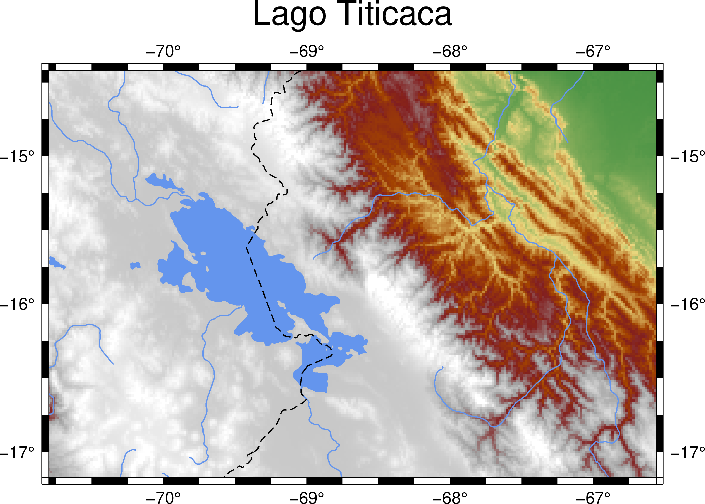
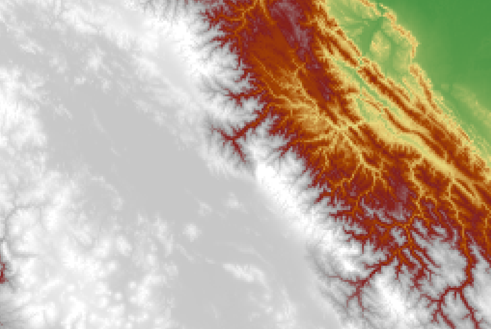
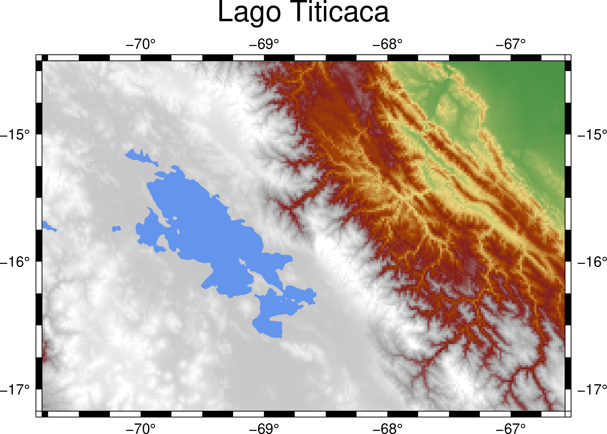

Color the Topography
Contents
2. Color the Topography#
Attention
This instruction is for the Modern Mode in GMT 6. For making the same map using the GMT 6 Classic Mode or GMT 4-5, Please go to this page.
To effectively visualize spatial data, one can use different colors on the map based on different values. One of the most frequently used datasets for coloring map is the surface elevation. For a classical topological map, a specific color corresponds to a particular altitude. In this chapter, we are going to see how to make a colored topological map using elevation data.
2.1. Goal#
Make a color-coded topographical map of Lake Titicaca (Lago Titicaca), as the following figure shows. Lake Titicaca is a large lake between Peru and Bolivia with an area of 8372 km2. It’s generally recognized as the highest navigable lake in the world1, with a surface elevation of 3812 m. The blue lines in the figure represent rivers. Note that the river to the right is the upstream of the Amazon River, which does not connect to Lake Titicaca. A blue dashed line illustrates the political border between Peru and Bolivia. The height is color-coded from 0 to 5000 m (following the sequence: green -> yellow -> red -> gray -> white). All elevations above 2800 m are represented in grayish colors. It may give you the impression that the area around Lake Titicaca is the realm of snow since it is immersed in a white background, but in fact, the winter at Lake Titicaca is so dry that it rarely snows a lot2.
{kind=link}
Go to the final Script
2.2. Commands and Techniques#
grdinfo- display basic information from a grid filegrdimage- plot colored imagecoast- plot rivers, lakes, and bordersUsing the topographic data from the GMT server
Search on cpt-city for a color ramp that fits your map
How to overlay multiple layers
Run all of plotting commands in a script at once using
gmt beginandgmt end
2.3. Getting Data#
Firstly we have to get the topographic data on our desired plotting region. GMT 6 provides the global topographic data itself stored in a remote server. Those data are only downloaded if needed. The name of the dataset is:
@earth_relief_rru
Here rr is the pixel spacing, and u is its unit (d for degree, m for are-minute, and s for arc-second). We are going to use the global topography in 1 arc-minute, and thus the corresponding dataset name is @earth_relief_01m. The GMT official manual also tells you how to access other available data. If you want to check your topo data for more information, you can enter grdinfo in your terminal like what the following panel shows:
$ gmt grdinfo @earth_relief_01m
earth_relief_01m: Download file from the GMT data server [data set size is 214M].
earth_relief_01m: Earth Relief at 1x1 arc minutes obtained by Gaussian Cartesian filtering (1.9 km fullwidth) of SRTM15+V2 [Tozer et al., 2019].
/home/whyj/.gmt/server/earth_relief_01m.grd: Title: Earth Relief at 01 arc minute
/home/whyj/.gmt/server/earth_relief_01m.grd: Command: grdfilter SRTM15+V2.nc -Fg1.9 -D1 -I01m -rg -Gearth_relief_01m.grd=ns --IO_NC4_DEFLATION_LEVEL=9 --PROJ_ELLIPSOID=Sphere
/home/whyj/.gmt/server/earth_relief_01m.grd: Remark: Obtained by Gaussian Cartesian filtering (1.9 km fullwidth) from SRTM15+V2.nc [Tozer et al., 2019; http://dx.doi.org/10.1029/2019EA000658]
/home/whyj/.gmt/server/earth_relief_01m.grd: Gridline node registration used [Geographic grid]
/home/whyj/.gmt/server/earth_relief_01m.grd: Grid file format: ns = GMT netCDF format (16-bit integer), CF-1.7
/home/whyj/.gmt/server/earth_relief_01m.grd: x_min: -180 x_max: 180 x_inc: 0.0166666666667 (1 min) name: longitude n_columns: 21601
/home/whyj/.gmt/server/earth_relief_01m.grd: y_min: -90 y_max: 90 y_inc: 0.0166666666667 (1 min) name: latitude n_rows: 10801
/home/whyj/.gmt/server/earth_relief_01m.grd: z_min: -10907 z_max: 8170 name: elevation (m)
/home/whyj/.gmt/server/earth_relief_01m.grd: scale_factor: 1 add_offset: 0
/home/whyj/.gmt/server/earth_relief_01m.grd: format: netCDF-4 chunk_size: 129,129 shuffle: on deflation_level: 9
The first two lines only appear when it needs to download the data from the server. The downloaded files are stored in ~/.gmt/server/ by default. The next time GMT will check if there are already the specified files in this folder and will only download them again if the program cannot find them. You can see that the downloaded file name is earth_relief_01m.grd. The file extension .grd suggests that it’s a “gridded” file. Imagine part of Earth’s surface is cut like a chessboard, and every cell on this chessboard has one value that represents the height of the surface. This is how a “gridded” surface would look like. (The concept of GeoTiff is similar to this; however, we call each chessboard value a “pixel,” not a “gridded point.”) The extension .grd is commonly used for netCDF format, which can be loaded and plotted by GMT. From the output text of grdinfo you can also see
The gridded data are resampled from a topography database called SRTM15+V2.
X is from -180 to 180 degrees, and Y is from -90 to 90 degrees. This means the file covers the entire Earth’s surface.
The size of each grid is 0.0166666666667, equal to one sixtieth degrees (1 arc minute).
There are in total of 21,601 x 10,801 = 233,312,401 grid points (that is, around one-fourth billion pixels!).
Z value (height) is from -10907 to 8170 meters. The reason why the highest point is not 8848 m (the elevation of Mt. Everest) is that the resolution of this grid file is not high enough. A 1-arc-minute spacing means we only take one height measurement every 1-2 km.
2.4. Procedure#
Starting from this chapter, we will need more than one GMT command to make a map. coast (introduced in the previous chapter) is for plotting vector data (rivers, lakes, and country borders), and grdimage (introduced in this chapter) is for plotting topography. In the previous chapter, we introduced the -png option, but this way is only for single-command mapping. Thus, we will use a more general method to specify the output file in this chapter. It is the use of gmt begin and gmt end to wrap all the other plotting commands, like this:
$ gmt begin [map name without file extension] [format] # when the command is entered, press enter
$ [plotting command 1] # when the command is entered, press enter
$ [plotting command 2] # when the command is entered, press enter
...
$ gmt end
You can enter these commands line by line and run them separately, but for the convenience of editing, we usually choose to write everything down in a text Scripts, aka Batch files. When you run this script, you send all commands to the computer at once. We will introduce this way by showing how to write a script in this chapter.
Once we get the global topography data, the next step would be deciding where on the Earth we want to plot (that is, map extent). Like we said in the previous chapter Make Your First Map, we can use tools like Google Maps to determine the region. Here we choose longitude from -70.8 to -66.56 (negative number means W) and latitude from -17.17 to -14.42 (negative number means S), based on the distribution of elevations.
Fig. 2.1 The map extent viewed on Google Maps.#
To use grdimage to plot topography, we need at least two arguments, which are input file and -J (projection and map size). We also need -R (map extent) here since GMT would plot all the gridded data on the map without an -R setting. (This would be a global map in our case because we are using a global topography dataset.) Let’s make a map with the same size from the map in the previous chapter. Please create a new text file, entitled titicaca.bash or whatever you like (it’s still better to fit your system format convention). Enter the following lines:
gmt begin titicaca png
gmt grdimage @earth_relief_01m -R-70.8/-17.17/-66.56/-14.42r -JM6i
gmt end
You may notice that we added four spaces before the gmt grdimage command. This makes an indentation and lets the readers know that this line is between gmt begin and gmt end for readability. The indentation does not affect the script at all. For more information about -R and -J options, please go to Make Your First Map. Save you file, and in the Terminal mode, go to the folder where titicaca.bash is located and run the script. For example, type this in Linux:
$ bash titicaca.bash
Note
If you are running scripts on a platform other than Linux, there will be some extra settings to make the script run more easily. Please see Basic Concepts and Terms for more details.
Open the output file titicaca.png and you should see a map like this:
{kind=link}
Hard to comprehend? This is because the default GMT color ramp doesn’t fit this region quite well. If we don’t assign a color ramp for the @earth_relief topo data, GMT will use one called geo for the output map. The color distribution of this color scheme is shown here:
{kind=link}
The color of 0 and the color of 1 – that is, dark blue and white – would correspond to the lowest and the highest point on the map. Is there any way to replace it with a better color ramp? Of course, the answer is yes; GMT has several ways to create your color ramp or adjust an existing one, but here we are going to see the simplest method: downloading a ready-to-use color ramp from the Internet.
The website cpt-city has collected many popular color ramps, including those in the GMT format. GMT-formatted color ramps usually use the file extension .cpt, which represents “color palette table”. You can look for the color ramp you want on the website; for example, this page lists the most-downloaded .cpt files. Here we are going to use the one called mby. Click the mby color ramp, and you should see the following page:
Note that the number -8000 … 5000 means that this color ramp has been adjusted to illustrate elevations between -8000 and 5000 (meters). Click the link to cpt on the page to download this color ramp.
For your convenience, We also provides the download link to mby.cpt at here.
We can use the -C option in grdimage to assign a color ramp in our map – simply put the name of the ramp file directly after the -C and you are done. Here’s our updated script:
gmt begin titicaca png
gmt grdimage @earth_relief_01m -R-70.8/-17.17/-66.56/-14.42r -JM6i -Cmby.cpt
gmt end
Run the script again and your map would become this
{kind=link}
Looks much better.
Note
If you want to customize your color ramp and use whichever color you like on the map, please see “Pen and Painting” and “Edit CPT and Colorbar.”
There is still a big issue on our map. We already know that this whole area is mostly in high altitude (shown in gray-white), but we can’t see our primary target Lake Titicaca. This is because the topographic data only contain the heights and don’t say anything about the types of land cover. If we only use grdimage to plot these data, we will not be able to know where the lakes or the seas are. So we have to call coast in order to mark the location of Lake Titicaca, draw the water body, and put a map frame on it.
When a map comes from two or more GMT plotting commands, what lies above should be plotted last. Since we want the lake from coast lied above the topo data from grdimage, we have to put the line of coast command below the grdimage command. Open the script again and change the content to:
gmt begin titicaca png
gmt grdimage @earth_relief_01m -R-70.8/-17.17/-66.56/-14.42r -JM6i -Cmby.cpt
gmt coast -Scornflowerblue -Baf -B+t"Lago Titicaca"
gmt end
Please go to Make Your First Map for using the coast options. In addition, you may have noticed that there is no -R and -J options in coast. When these options are not specified, GMT automatically follows the settings from the last time. That is, the settings of -R and -J from grdimage will be used here to save time from entering the same content twice.
Tip
The
-Soption incoastis for every water body. If there are seas and lakes in your map and you want to assign different colors for each of them,-Coption can do the job for you. There is no ocean area on our map, so-Scornflowerblueand-Cl/cornflowerbluehave the same effect, although the latter only fills the color into lake areas.Let us take a look at two
-Boptions atcoast. Actually, it is also ok to put them ingrdimagebecause which layer the map frame is plotted on doesn’t really matter, and it would look the same.
Run the updated script in the terminal and open the output file again. You should see the following map:
{kind=link}
Now, this map is very close to what we want, and the final step is to use other options in coast to decorate it. First, -I marks rivers on the map, with the following syntax:
-Inumber/pen
The number is an alphanumerical letter corresponding to different levels of rivers in terms of size, and the pen is used for giving the appearance of these rivers. Here we use the letter r, corresponding to all permanent rivers, and the pen style is 0.7p,cornflowerblue.
Another coast option we are going to use is -N for plotting political boundaries. Its syntax is similar:
-Nnumber/pen
The number here, just like the previous one, is an alphanumerical letter corresponding to different tiers of political boundaries (national, state, etc.). We are going to use 1, which means national boundaries. We use 0.7,,-- for pen attributes; note that we omit the column of “color,” so GMT would use the default “black” to plot these lines. Also, we choose -- for “line style” so that the boundaries will be plotted in dashed lines.
Note
For the advanced and detailed settings of the pen attributes, like line styles or custom colors using RGB values, please go to Pen and Painting.
Add -N and -I and their parameters to our coast command, and the map design is done.
2.5. Script#
The final script for our map is:
gmt begin titicaca png
gmt grdimage @earth_relief_01m -R-70.8/-17.17/-66.56/-14.42r -JM6i -Cmby.cpt
gmt coast -Ir/0.7p,cornflowerblue -N1/0.7p,,-- -Scornflowerblue -Baf -B+t"Lago Titicaca"
gmt end
Note
“Plot the topographical map – map extent is set to (70.8E - 66.56E，17.17S - 14.42S) in Mercator projection and 6 inches wide. We use the color ramp from mby.cpt, and plot the lake and rivers in cornflowerblue. We also draw national borders, a map frame, and annotation marks on the map, but the locations and the spacing of these marks are automatically determined. We do not plot grid lines this time. The map is entitled Lago Titicaca and saved as titicaca.png.”
Check the final map
2.6. PyGMT script#
You can make the same map using the following PyGMT script:
import pygmt
# Get the Earth relief data
region = [-70.8, -66.56, -17.17, -14.42]
grid = pygmt.datasets.load_earth_relief(resolution='01m', region=region)
# Plotting
fig = pygmt.Figure()
fig.grdimage(grid, region=region, projection='M6i', cmap='mby.cpt')
fig.coast(rivers='r/0.7p,cornflowerblue', borders='1/0.7p,,--', water='cornflowerblue', frame=['af', '+t"Lago Titicaca"'])
fig.show()
fig.savefig('titicaca_pygmt.png')
You can use the following Binder link to try this code:
2.7. Exercise#
Make a colored topographical map of Lake Baikal (Baygal nuur) and its surrounding area. Lake Baikal is the deepest lake and the seventh-largest lake in the world. It is located in Russia, close to the boundary of Mongolia in the south.
How many rivers are connected to Lake Baikal? Can you see that on the map?
How high is the area around Lake Baikal? How high is the bottom of Lake Baikal? What colors are used to represent these two elevations on your map?
- 1
Data Summary: Lago Titicaca (Lake Titicaca). International Lake Environment Committee Foundation - ILEC. Retrieved 2009-01-03.
- 2
ClClimatological Information for Juliaca, Peru. Hong Kong Observatory.